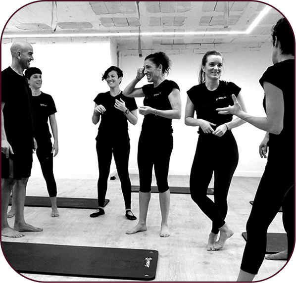

Conciente Método Pilates un espacio de formación enfocado en el entrenamiento consciente del cuerpo, basado en el ejercicio de Pilates. Nos encargamos de incentivar a iniciar una nueva cultura de educación sobre el cuidado y equilibrio entre el cuerpo y la mente.
El Método Pilates posee un enfoque en la reeducación de la salud postural y no se lo debe simplificar ligándolo exclusivamente a una función meramente estética. El mejor consejo es que elijas un lugar donde practicar el Método Pilates, por sus profesores y por su sistema de entrenamiento.
Los equipos son iguales en todos lados, lo importante es el tipo de entrenamiento que vas a hacer con ellos. Recordá que el trabajo debe ser realmente personalizado.
El método Pilates se diferencia de otras formas de realizar ejercicios físicos porque se focaliza en la calidad de los movimientos y no en su repetición hasta el fallo muscular.
Podés elegir entre modalidad presencial en tu propio estudio o una capacitación virtual.
Creemos fervientemente en la frase "mente sana en cuerpo sano". Nuestro sistema de acondicionamiento físico integrado se nutre de la técnica creada por Joseph Pilates llamada "Contrología".